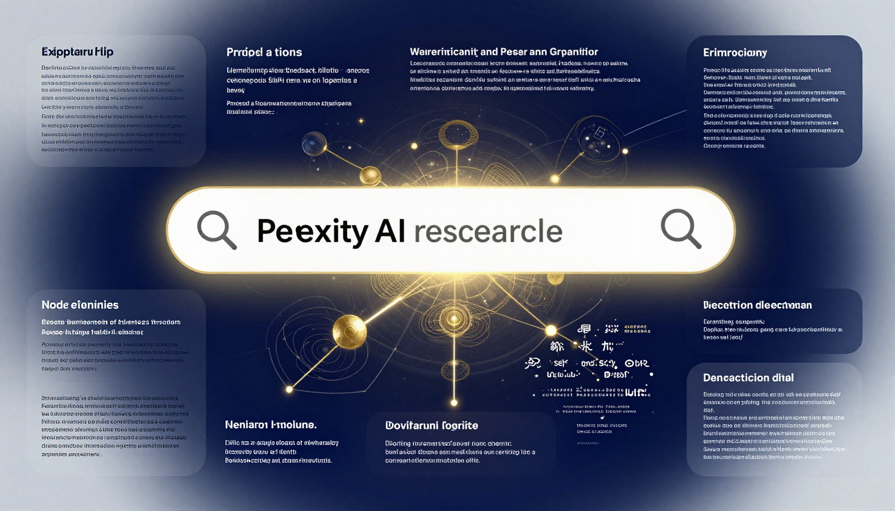

Perplexity AI Review (2026): The Best AI Research Tool?

What Is Perplexity AI?
Perplexity AI is an AI-powered search engine and research assistant that provides cited, sourced answers to your questions. It combines the power of large language models with real-time web search to deliver accurate, up-to-date information.
Key Features
- Cited Answers: Every response includes source citations you can verify
- Real-Time Search: Access current information from the web
- Deep Research: Generate comprehensive research reports on any topic
- File Upload: Analyze uploaded documents
- Collections: Organize research into reusable folders
- Focus Modes: Search academic papers, YouTube, Reddit, and more
- Spaces: Collaborative research workspaces
Performance
Research Quality: Perplexity excels at research. The cited sources make it trustworthy, and the Deep Research feature creates comprehensive reports. Score: 9.5/10
Speed: Fast responses with real-time search results. Score: 9/10
Accuracy: Sources are cited and verifiable, making it one of the most trustworthy AI tools. Score: 9/10
Pros
- Best AI research tool available
- All answers include verifiable citations
- Deep Research creates detailed reports
- Real-time, up-to-date information
- Generous free tier
Cons
- Not ideal for creative writing
- Pro plan ($20/mo) needed for unlimited research
- Deep Research can be slow for complex topics
- Less versatile than ChatGPT for general tasks
Pricing
| Plan | Price | Features |
|---|---|---|
| Free | $0 | Standard search, 5 Pro searches/day |
| Pro | $20/mo | Unlimited Pro searches, Deep Research, file upload, Claude/GPT-4o |
Final Verdict
Perplexity is the best AI research tool available in 2026. If you need to find, verify, and synthesize information, nothing beats it. It complements ChatGPT and Claude perfectly. 4.4 out of 5 stars.
🎁 Free AI Tools Guide 2026
Download our free guide with 50+ AI tool comparisons, pricing, and recommendations.
Download Free Guide →